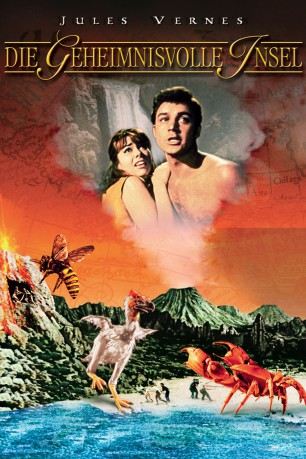

#7235 Die Geheimnisvolle Insel
Alternativ: Mysterious Island
 
 IMDB-Wertung: 6.8 / 10
IMDB-Wertung: 6.8 / 10  Metascore: 0
Metascore: 0 
In einer Hexenküche unheimlicher Gefahren versuchen 7 Schiffbrüchige auf einer Insel zu überleben. All ihre Hoffnungen auf eine baldige Rettung werden zunichte gemacht, als ein Piratenschiff auftaucht und die Inselbewohner unter Feuer nimmt. Die Lage scheint hoffnungslos. Da wird das Piratenschiff plötzlich von einer gewaltigen Explosion erschüttert und versinkt mit seiner Besatzung. Unter Anleitung von Kapitän Nemo versuchen die Gestrandeten das Schiff zu heben. Aber Eile tut not, denn der Inselvulkan kann jeden Moment ausbrechen. Werden sich vor der Katastrophe noch alle retten können?
Jahr: 1961
Dauer: 100 Minuten
FSK: 6
Land: England Studio: Suevia FilmsTonspuren:
Untertitel:
Auflösung: 1080p (1920x1080) Größe: 7833 MB
Genre: Sci-Fi, Abenteuer, Fantasy, Familie
Regisseur: Cy Endfield
Drehbuch: John Prebble
Soundtrack:
Darsteller:
- Michael Craig als Capt. Cyrus Harding
- Joan Greenwood als Lady Mary Fairchild
 Michael Callan als Herbert Brown
Michael Callan als Herbert Brown Gary Merrill als Gideon Spilitt
Gary Merrill als Gideon Spilitt Herbert Lom als Captain Nemo
Herbert Lom als Captain Nemo- Beth Rogan als Elena Fairchild
 Percy Herbert als Sgt. Pencroft
Percy Herbert als Sgt. Pencroft- Dan Jackson als Cpl. Neb Nugent
- Harry Monty als (uncredited
Datei: X:\1961\Geheimnisvolle Insel, Die (1961, FSK6, 1920x1080).mkv seit 09.10.2017
Festplatte: HD 1900-1970
 Es gibt insgesamt 22 Filme in der Gruppe '1961'
Es gibt insgesamt 22 Filme in der Gruppe '1961'